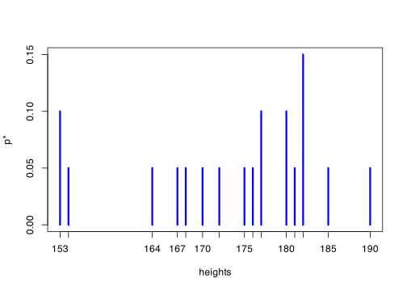
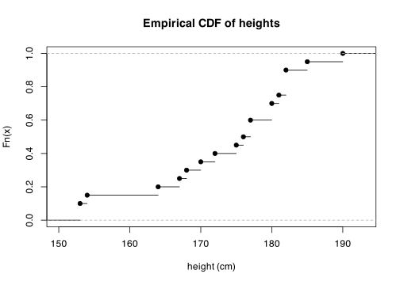

heights <- c(
180, 182, 182, 181, 164, 180, 154, 153, 177, 190,
182, 175, 167, 168, 185, 153, 172, 177, 176, 170
)
m <- length(heights)\[ \newcommand{\Exg}{\operatorname{\mathbb{E}}} \newcommand{\Ex}{\mathbb{E}} \newcommand{\Ind}{\mathbb{I}} \newcommand{\Var}{\operatorname{Var}} \newcommand{\Cov}{\operatorname{Cov}} \newcommand{\Corr}{\operatorname{Corr}} \newcommand{\ee}{\mathrm{e}} \]
24 Empirical distribution
24.1 Introduction
So far in this module, we have looked at sampling from distributions where we know the precise probability density function \(f\) or probability mass function \(p\). We have then been able to discover things about that distribution by sampling from \(f\) or \(p\): either exactly with independent samples (with the inverse transform method or envelope rejection sampling, for example), or approximately with samples of restricted dependence (with the Metropolis–Hastings algorithm).
But statisticians deal with data, not with probability distributions. A much more common situation is that we have some data. We believe that the data has come from a distribution, but we don’t know what that distribution is. Nonetheless, we still want to find out facts about that unknown distribution.
One traditional way to do this would be to fit a distribution to the data. By using knowledge about the context of the data and by examining the data itself, an appropriate parametric model could be chosen, and then the parameters could be estimated from the data. Once the model has then been specified, we can find out about that model using the ideas we have looked at in this course.
But sometimes this is not possible or desirable. With insufficient contextual knowledge, we might not be able to choose an appropriate parametric model. Or the data might not seem to fit any of the famous parametric models. And even if we did choose and fit a model, there’s no guarantee that out choice would be correct.
Instead, we could look for the model that makes the fewest possible assumptions about the data. This is called the empirical distribution, which we will look at today. This is the basis for a collection of statistical techniques called the bootstrap (or bootstrapping), which we will look at for the next lecture.
24.2 Definition and properties
Consider the following dataset \(\mathbf x = (x_1, x_2, x_3, x_4, x_5)\) of \(m = 5\) values: \[ 2, \ 3, \ 3, \ 4, \ 6 .\]
We could try to fit a distribution to this data. For example, if we knew it was recording the number of absences from a class of 20 students over five lectures, we might think a binomial \(\operatorname{Bin}(20, p)\) model was appropriate, and then try to estimate the value of \(p\). If it was recording the number of emails received per hour, we might think a Poisson \(\operatorname{Po}(\lambda)\) model was appropriate, and try to estimate the value of \(\lambda\).
But that involves making assumptions. What if we wanted to make no assumptions about the data – or, at least, as few assumptions as possible? Well, we can say that in our data set, one fifth of the data was the value 2, two fifths was 3 (because there were two 3s in the dataset), one fifth was 4, and one fifth was 6. So we choose the model that these come from a random variable \(X^*\) where \[\begin{align} \mathbb P(X^* = 2) &= \tfrac15 & \mathbb P(X^* = 3) &= \tfrac25 \\ \mathbb P(X^* = 4) &= \tfrac15 & \mathbb P(X^* = 6) &= \tfrac15 . \end{align}\] This is called the empirical distribution. (The word “empirical” refers to what you actually observed, rather than assumed.)
Definition 24.1 Consider a dataset \(\mathbf x = (x_1, x_2, \dots, x_m)\). The empirical distribution \(X^*\) of this data is a discrete random variable with probability mass function \(p^*(x) = \mathbb P(X^* = x)\), where \[ p^*(x) = \frac{1}{m} \,\big| \{j : x_j = x \} \big| = \frac{1}{m} \sum_{j=1}^m \mathbb{I}_{\{x\}}(x_j) . \]
In other words, \(p^*(x)\) is simply the proportion of the dataset that took the value \(x\).
We’re not suggesting that the distribution \(X^*\) is necessarily the “true” distribution the data actually came from. Rather, we feel that by reducing any of our own assumptions that we make on the data, we are giving the data the best opportunity to “speak for itself”, rather than imposing our own views and opinions on the data.
On that point, consider this dataset of \(m = 6\) datapoints: \[ 0.580, \ 3.219, \ 3.433, \ 4.913, \ 18.784, \ 28.133. \] It certainly looks like these came from a continuous distribution. But the empirical distribution \(X^*\) is still discrete – it takes each of those values with probability \(\tfrac16\). The claim is not the the empirical distribution is likely to be “correct”; rather, the claim is that by minimising the assumptions we make, we aren’t polluting the data any further.
Let’s think further about this random variable \(X^*\), the empirical distribution of a dataset \(\mathbf x\).
First, taking a single sample from the random variable \(X^*\) is equivalent to picking one of the datapoints at random. The probability we pick a value \(x\) is simply the proportion of the datapoints that take the value \(x\).
Taking multiple IID samples from \(X^*\) is the same as sampling from the dataset with replacement – since, to be independent samples, it has to be possible to pick the same datapoint twice.
Second, since \(X^*\) is a random variable, we can do calculations with it just as we would any other random variable.
For example, we can calculate its expectation. This is \[\begin{align} \mathbb E_*X^* &= \sum_x x\,p^*(x) \\ &=\sum_x x\, \frac{1}{m} \sum_{j=1}^m \mathbb{I}_{\{x\}}(x_j) \\ &= \frac{1}{m} \sum_{j=1}^m \sum_x x\, \mathbb{I}_{\{x\}}(x_j) . \end{align}\] Now, if we think about the term \(x\, \mathbb{I}_{\{x\}}(x_j)\) inside the sum over \(x\) here, the indicator will equal 0 for every term in the sum except the term \(x = x_j\), when the term will equal \(x \times 1 = x_j\). Hence, we have \[ \mathbb E_*X^* = \frac{1}{m} \sum_{j=1}^m x_j . \] But this is just the sample mean of the data set. The empirical expectation is the sample mean, \(\mathbb E_*X^* = \overline x\).
You probably noticed the notation \(\mathbb E_*\) here. We use this notation when we want to emphasise we are taken the expectation over the empirical distribution, taking the data as fixed. This isn’t really needed here – we know our data is the fixed observations \(\mathbf x\). But later on, we will model the data itself as being samples from a random variable. There we will want to distinguish between taking an expectation \(\mathbb E\) over the randomness in the samples themselves and taking an expectation \(\mathbb E_*\) over the empirical distribution while treating the samples as fixed.
We can also calculate the variance similarly. Since \(\mathbb E_*X^* = \overline x\), we have \(\operatorname{Var}_*(X^*) = \mathbb E_*(X^* - \overline x)^2\). By the same argument as for the expectation, we have \[\begin{align} \operatorname{Var}_*(X^*) &= \sum_x \big(x - \overline x\big)^2 \, p^*(x) \\ &= \sum_x \big(x - \overline x\big)^2 \,\frac{1}{m} \sum_{j=1}^m \mathbb{I}_{\{x\}}(x_j) \\ &= \frac{1}{m} \sum_{j=1}^m \sum_x \big(x - \overline x\big)^2 \,\mathbb{I}_{\{x\}}(x_j) \\ &= \frac{1}{m} \sum_{j=1}^m \big(x_j - \overline x\big)^2 . \end{align}\] This is almost the sample variance – it just has \(\frac{1}{m}\) in front instead of the usual \(\frac{1}{m-1}\). This won’t make much difference when \(m\) is large.
Third, its often more mathematically pleasant to work with is the empirical cumulative distribution function \(F^*\). This is \(F^*(x) = \mathbb P(X^* \leq x)\). We can calculate the empirical CDF as \[\begin{align} F^*(x) = \sum_{y \leq x} p^*(y) &= \sum_{y \leq x} \frac{1}{m}\, \big| \{j : x_j = y \} \big| \\ &= \frac{1}{m}\sum_{y \leq x}\big| \{j : x_j = y \} \big| \\ &= \frac{1}{m}\, \big| \{j : x_j \leq x \} \big| . \end{align}\] So this is just the proportion of the datapoints that are less than or equal to \(x_j\). This tends to be more mathematically convenient, because the CDF works equally well for discrete and continuous random variables, so this is flexible to the fact that the empirical distribution is always discrete while the true distribution may be continuous.
24.3 Empirical distributions in R
Example 24.1 The heights (in cm) of 20 student’s surveyed in one of Dr Voss’s modules is as follows:
In R, the table() function tells us how many outcomes we had of each value. We can then find the empirical PMF \(p^*\) by dividing this by \(m\).
table(heights)heights
153 154 164 167 168 170 172 175 176 177 180 181 182 185 190
2 1 1 1 1 1 1 1 1 2 2 1 3 1 1 table(heights) / mheights
153 154 164 167 168 170 172 175 176 177 180 181 182 185 190
0.10 0.05 0.05 0.05 0.05 0.05 0.05 0.05 0.05 0.10 0.10 0.05 0.15 0.05 0.05 plot(table(heights) / m, lwd = 3, col = "blue", ylab = "p*")
We can sample from the empirical distribution \(X^*\). Recall that we said taking IID samples from \(X^*\) is equivalent to sampling from \(\mathbf x\) with replacement. Here is a sample of \(n = 30\) heights. (Note that this is more than the \(m = 20\) datapoints we had – but this is no problem if we are sampling with replacement.)
sample(heights, 30, replace = TRUE) [1] 177 153 154 175 190 167 185 181 182 177 182 167 167 172 153 180 176 153 180
[20] 182 153 168 175 177 182 185 154 181 164 177Make sure you use replace = TRUE to ensure you are sampling with replacement.
The expectation and variance of the empirical distribution are as follows.
heights_mean <- mean(heights)
heights_var <- sum((heights - heights_mean)^2) / m
c(heights_mean, heights_var)[1] 173.40 109.64We can form the empirical CDF in R with the ecdf() function.
Fstar <- ecdf(heights)
plot(Fstar, main = "Empirical CDF of heights", xlab = "height (cm)")
The object produced by ecdf() is a function. So we can find, for example, the empirical CDF at 172, \(F^*(172)\), which is the proportion of a dataset with heights less than or equal to 172 cm.
Fstar(172)[1] 0.4One more thing on the empirical distribution \(X^*\). If we pick an index \(J\) uniformly from \(\{1, 2, \dots, m\}\), then \(x_J = X^*\). That is, we can think of \(X^*\) as picking one of the datapoints uniformly at random. (This way of looking at \(X^*\) is used a lot in the book of Voss.)